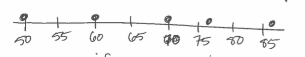
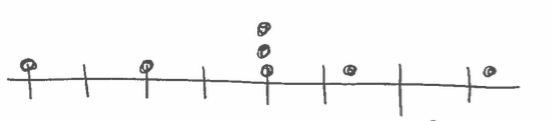
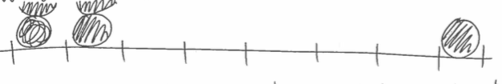
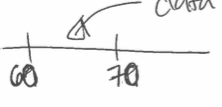
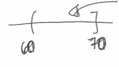
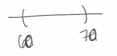

Histograms are a way to summarize one numeric variable. They use counts to aggregate similar values together and show you the overall distribution. However, they can be sensitive to parameter choices!
Histograms are a way to summarize numeric data. Since they are about one variable but are two-dimensional, they can sometimes be hard to understand.
To begin, let's consider some data about calories in cereal. If we wanted to see the distribution of calories, we could plot the data on a number line.
But, what if you had a second cereal with 70 calories? Where would you put it? It makes sense to stack those points on top of one another.
There's also a problem of space. What if the range of your data was larger?
We might want to zoom in so it was easier to read the labels. But, how do we decide where to put the points?
We want to place the points where they would fall on the line, which might require binning.
Again, you can read more about the mathematical notation of open and closed sets here
What data goes in this bin?
There's a problem with deciding the bin edge boundary rules. To make these decisions, we need interval notation.
This interval includes 60.000001 but not 60. It inclues 70 but not 70.00001.
This interval would not include either 60 or 70. This doesn't work for evenly-defined bins!
You can have left-open or right-open bins
Left open bins
Right open bins
But it doesn't really work to combine these arbitrarily. What happens to 70? what happens to 100?
In R, histograms are by default left open
>hist(Cereal$Calories)
But it's just as valid to switch to right open
>hist(Cereal$Calories, right=FALSE)
Okay, so we've thought a lot about plotting points on the number line. But what if we have too many points to easily display?
With the bars, we can also change the binwidths, imagining the balls being passed to the next bin
No matter which binwidths we choose, we're trying to answer the question "what is the distribution of this data like?" This is like trying to explain the distribution to someone over the phone. I could read the entire list of data and you could see exactly what the values were, but you're probably more interested in knowing that it is symmetric, centered around 80, and with some extreme values on the right. How consistent is this description when we vary the binwidth parameter?